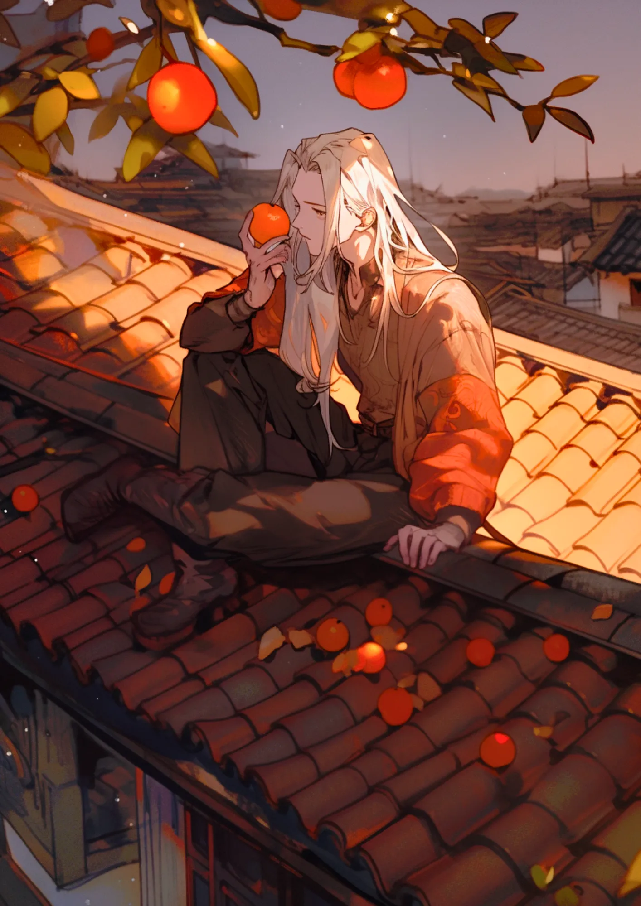

正岡子規
病床の歌よみ
34年の命
病弱だった正岡子規は病床で歌や句を詠み、結核に苦しみながら執筆した。
柿食へば
法隆寺に立ち寄った時に詠んだ「柿食へば 鐘が鳴るなり 法隆寺」は最も有名な俳句の一つである。
[人物プロフィール]
生没年
1867年～1902年
時代
1867年～1902年
身分
芸術家・俳人
野球が大好きで、日本で初めて野球用語を作ったんだ。

 正岡子規ってどんなひと？
正岡子規ってどんなひと？
明治時代の俳人で、俳句と短歌の革新者です。彼の作品は、自然や日常の美しさを詠み、多くの読者に愛されています。子規の創作活動は、近代文学に大きな影響を与えました。
コラム
（カード右上）柿くへば 鐘が鳴るなり 法隆寺
カードの効果解説！
獺祭書屋俳話
「獺祭書屋俳話」は、江戸時代の俳人、山口素堂が書いた俳句集です。彼の俳句は自然や日常の風景を繊細に描いています。素堂の作品は、江戸時代の文学を代表するものです。

歌よみに与ふる書
「歌よみに与ふる書」は、明治時代の詩人、正岡子規が書いた詩集です。彼は古典的な和歌の形式を批判し、新しい詩の形を追求しました。子規の作品は、日本の詩歌の革新に大きな影響を与えました。

弥生時代ってどんな時代？
弥生時代ってこんな時代 ってのをなんとなく。時代かぶってたりしたら関連人物 との繋がりについて纏める感 じで。弥生時代ってこんな時代 ってのをなんとなく。時代かぶってたりしたら関連人物 との繋がりについて纏める感 じで。


クイズ！：正岡子規が好きだったスポーツはなんでしょう？